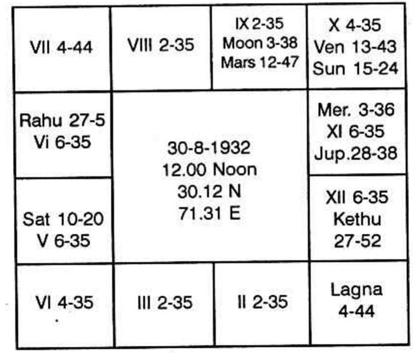

The horoscope is as follows:

Sun dasa balance 2 years 10 months 11 days.
On 11-5-1970, Jupiter dasa has started.
For business, judge houses 2, 7 and 10. The second house shows self-acquisition. The seventh denotes customers and partners. It gives good indication about the nature of the people with whom you will have to deal; houses 6 and 7 indicate those from whom you buy; 7 and 12 denote those to whom you sell.
Further, one is to note the dasa period which one runs. Because in one period and sub period, one may be in service; in another subperiod in the same major period keep idle; in the third subperiod do business; in the next subperiod, have gains, in another lose and so on.
Hence one is to note what each planet can contribute. Always consider the sublord.
Western authors say that Saturn in the 7th house is not favourable to undertake any business. But according to Krishnamurti Padhdhati Saturn sub occupied by lord of 7 or significator of 7 is disadvantageous for a successful business. Opposition and loss in public affairs are threatened. Whether there is success or not, whether one will do business, is to be judged from the significator of 7 and the 7th cusp sublord. Mars gives one the courage to undertake. Mercury shows one's tact, skill, ability and publicity. Venus indicates that due to his sweet smile, pleasing words and social success by being a Lion, a Rotary Club member, or Cosmopolitan Club member, or a member in any club or society, due to friendship and contact, one can be successful; if Venus is evil, it will spoil him due to disposition one is to judge how one can thrive or will meet with loss and failure.
Further, planets occupying earthy signs make a person businesslike and care for material welfare by doing business. If the earthy sign happens to be 12 or 5 or 8, and the sublord of the 7th cusp is in 5 or 8 or 12 in the earthy sign, one loses. If the significator of the 7th house is in the sub of a planet who is either by occupying the 5th house or deposited in the constellation of a planet in 5 or 8 or 12, winds up business due to loss.
In this chart, 7th cusp is in 4—44' in Pisces. It is in Saturn's star and Saturn's sub. Further, Saturn is in earthy sign in 5 to the ascendant i.e. in 11 to 7.
No planet is in 7. Lord of the sign in which 7th cusp falls is Jupiter. It is in the sub of Saturn in 5. Hence business is no good to this person.
As neither the dasanath, nor the sublord is connected with Mars, this native will not have the courage to start a business.
“Neither there is opportunity, nor there can be success if he does independently the business” is the promise of the planets. This person will not do business.
Since years, he wants to do – At the same time he is funky. Yet he has not started (K.S.K. 3-7-71)